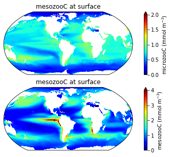
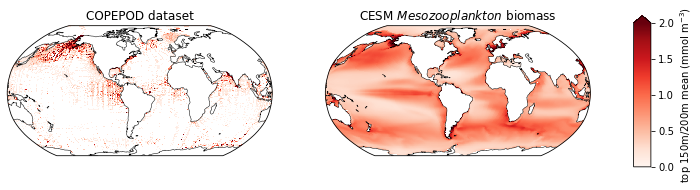
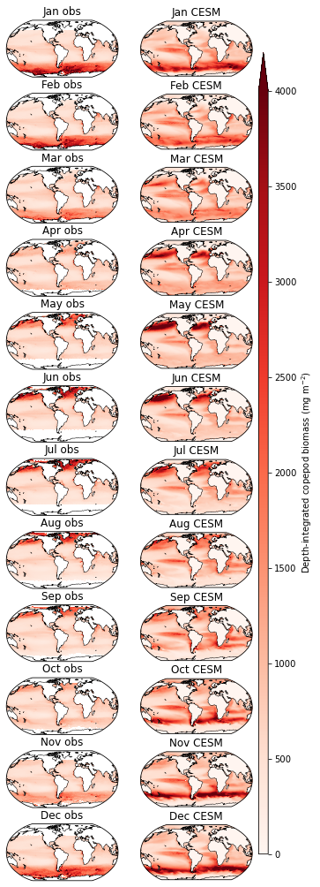

Zooplankton biomass
%load_ext autoreload
%autoreload 2
import xarray as xr
from dask.distributed import Client
import numpy as np
import catalog
import util
import pandas as pd
xr.set_options(keep_attrs=True)
import matplotlib.pyplot as plt
import cartopy
import cartopy.crs as ccrs
import pop_tools
/glade/work/kristenk/miniconda/envs/cesm-exp/lib/python3.7/site-packages/dask_jobqueue/core.py:20: FutureWarning: tmpfile is deprecated and will be removed in a future release. Please use dask.utils.tmpfile instead.
from distributed.utils import tmpfile
<xarray.core.options.set_options at 0x2b2271c969d0>
ds_grid = pop_tools.get_grid('POP_gx1v7')
lons=ds_grid.TLONG
lats=ds_grid.TLAT
Parameters
casename = 'g.e22a06.G1850ECOIAF_JRA_PHYS_DEV.TL319_g17.scope_v1'
component = 'pop'
stream = 'h'
cluster_scheduler_address = None
assert component in ['pop']
assert stream in ['h', 'h.ecosys.nday1']
Connect to cluster
if cluster_scheduler_address is None:
cluster, client = util.get_ClusterClient()
cluster.scale(12)
else:
client = Client(cluster_scheduler_address)
client
/glade/work/kristenk/miniconda/envs/cesm-exp/lib/python3.7/site-packages/distributed/node.py:182: UserWarning: Port 8787 is already in use.
Perhaps you already have a cluster running?
Hosting the HTTP server on port 35720 instead
f"Port {expected} is already in use.\n"
Client
Client-c641ae58-fe0a-11ec-b443-3cecef1b11fa
| Connection method: Cluster object | Cluster type: dask_jobqueue.PBSCluster |
| Dashboard: https://jupyterhub.hpc.ucar.edu/stable/user/kristenk/proxy/35720/status |
Cluster Info
PBSCluster
8caae32f
| Dashboard: https://jupyterhub.hpc.ucar.edu/stable/user/kristenk/proxy/35720/status | Workers: 0 |
| Total threads: 0 | Total memory: 0 B |
Scheduler Info
Scheduler
Scheduler-d04d15d8-37f6-4672-a9a0-8e0ad32eaae7
| Comm: tcp://10.12.206.54:43563 | Workers: 0 |
| Dashboard: https://jupyterhub.hpc.ucar.edu/stable/user/kristenk/proxy/35720/status | Total threads: 0 |
| Started: Just now | Total memory: 0 B |
Workers
Load the data
dsets = catalog.to_dataset_dict(
case=casename,
component=component,
stream=stream,
)
dsets.keys()
dict_keys(['g.e22a06.G1850ECOIAF_JRA_PHYS_DEV.TL319_g17.scope_v1.pop.h'])
ds = dsets[f'{casename}.{component}.{stream}']
Variable list
variables =['mesozooC', 'microzooC']
keep_vars=['z_t','z_t_150m','dz','time_bound','time','TAREA','TLAT','TLONG'] + variables
ds = ds.drop([v for v in ds.variables if v not in keep_vars])
Make a monthly climatology dataset
time = pd.date_range(start="2009-01-01", end="2019-01-01",freq="M")
mon_ds = ds.copy()
mon_ds['time'] = time
mon_ds = ds.groupby('time.month').mean('time')
Plot mesozooplankton and microzooplankton biomass at the surface
######
fig = plt.figure(figsize=(8,5))
ax = fig.add_subplot(2,1,1, projection=ccrs.Robinson(central_longitude=305.0))
ax.set_title('microzooC at surface', fontsize=12)
lon, lat, field = util.adjust_pop_grid(lons, lats, ds.microzooC.isel(z_t_150m=0))
pc=ax.pcolormesh(lon, lat, field, cmap='jet',vmin=0,vmax=2,transform=ccrs.PlateCarree())
cbar1 = fig.colorbar(pc, ax=ax,extend='max',label='microzooC (mmol m$^{-3}$)')
ax = fig.add_subplot(2,1,2, projection=ccrs.Robinson(central_longitude=305.0))
ax.set_title('mesozooC at surface', fontsize=12)
lon, lat, field = util.adjust_pop_grid(lons, lats, ds.mesozooC.isel(z_t_150m=0))
pc=ax.pcolormesh(lon, lat, field, cmap='jet',vmin=0,vmax=4,transform=ccrs.PlateCarree())
cbar1 = fig.colorbar(pc, ax=ax,extend='max',label='mesozooC (mmol m$^{-3}$)')

Compare mesozooplankton biomass to COPEPOD database
file = '/glade/u/home/kristenk/work/copepod-biomass/data/POP_gx1v7/copepod-2012__cmass-m00-qtr.zarr'
ds_copepod = xr.open_zarr(file, consolidated=False)
ds_copepod['copepod_C']=ds_copepod.copepod_C/12.011
fig = plt.figure(figsize=(12,3))
ax = fig.add_subplot(1,2,1, projection=ccrs.Robinson(central_longitude=305.0))
ax.set_title('COPEPOD dataset', fontsize=12)
lon, lat, field = util.adjust_pop_grid(lons, lats, ds_copepod.copepod_C)
pc=ax.pcolormesh(lon, lat, field, cmap='Reds',vmin=0,vmax=2,transform=ccrs.PlateCarree())
ax.coastlines('110m',linewidth=0.5)
ax = fig.add_subplot(1,2,2, projection=ccrs.Robinson(central_longitude=305.0))
ax.set_title('CESM ${\it Mesozooplankton}$ biomass', fontsize=12)
lon, lat, field = util.adjust_pop_grid(lons, lats, ds.mesozooC.mean(dim='z_t_150m'))
pc=ax.pcolormesh(lon, lat, field, cmap='Reds',vmin=0,vmax=2,transform=ccrs.PlateCarree())
ax.coastlines('110m',linewidth=0.5)
fig.subplots_adjust(right=0.8)
cbar_ax = fig.add_axes([0.85, 0.15, 0.02, 0.7])
fig.colorbar(pc, cax=cbar_ax,extend='max', label='top 150m/200m mean (mmol m$^{-3}$)');

Compare to observation-based GLMM of global mesozooplankton biomass climatology
Petrik et al., submitted to Global Biogeochemical Cycles
file = '/glade/u/home/kristenk/work/copepod-biomass/obsglmm_zmeso_vint_200m_monthly_climatology.nc'
ds_copepod_clim = xr.open_dataset(file)
ds_copepod_clim.zmeso200.attrs['units'] = 'mgC m-2'
months = ['Jan','Feb','Mar','Apr','May','Jun','Jul','Aug','Sep','Oct','Nov','Dec']
### depth integrate and convert model to mol/m2
mon_ds['mesozooC_zint'] = ((mon_ds.mesozooC) * 10.).sum(dim='z_t_150m') #in mmol/m2
mon_ds['mesozooC_zint'] = mon_ds['mesozooC_zint'] * 12.011 #convert to mgC/m2
mon_ds['mesozooC_zint'].attrs['units'] = 'mgC m-2'
fig = plt.figure(figsize=(5,18))
for row in np.arange(1,13):
ts=row-1
plot = row*2 - 1
ax = fig.add_subplot(12,2,plot, projection=ccrs.Robinson(central_longitude=305.0))
ax.set_title(months[ts]+' obs', fontsize=12)
pc=ax.pcolormesh(ds_copepod_clim.Lon, ds_copepod_clim.Lat, ds_copepod_clim.zmeso200.isel(month=ts),
cmap='Reds',vmin=0,vmax=4000,transform=ccrs.PlateCarree())
ax.coastlines('110m',linewidth=0.5)
plot = row*2
ax = fig.add_subplot(12,2,plot, projection=ccrs.Robinson(central_longitude=305.0))
ax.set_title(months[ts]+' CESM', fontsize=12)
tmp = mon_ds.mesozooC_zint.isel(month=ts)
lon, lat, field = util.adjust_pop_grid(lons, lats, tmp)
pc=ax.pcolormesh(lon, lat, field, cmap='Reds',vmin=0,vmax=4000,transform=ccrs.PlateCarree())
ax.coastlines('110m',linewidth=0.5)
cbar_ax = fig.add_axes([0.92, 0.15, 0.03, 0.7])
fig.colorbar(pc, cax=cbar_ax,extend='max', label='Depth-integrated copepod biomass (mg m$^{-2}$)');
